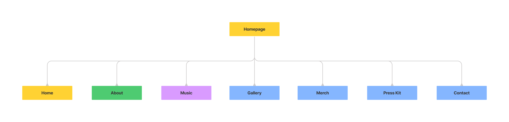
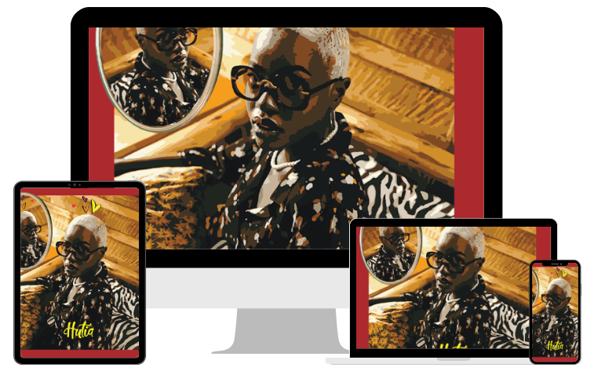
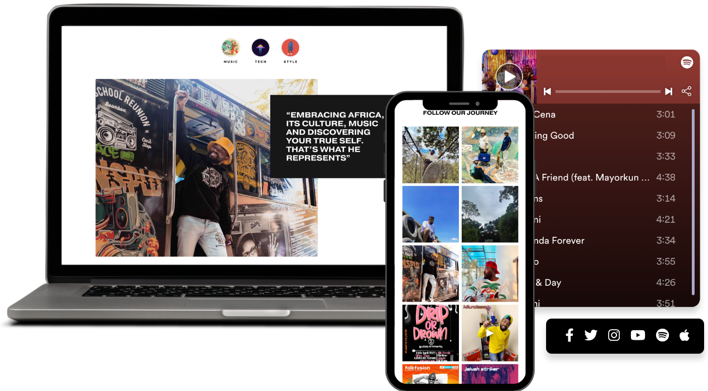
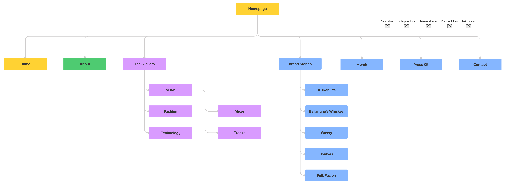

{{item.text}}
{{item.description}}
{{item.description2}}
{{item.description3}}
{{item.description4}}
{{item.description5}}
{{item.text}}
{{item.description}}
{{item.description2}}
{{item.description3}}
{{item.description4}}
{{item.description5}}

Approach & Process
{{item.text}}
{{item.description}}
{{item.description2}}
{{item.description3}}
{{item.description4}}
{{item.description5}}
How might we create an online artist platform that communicates to vendors, investors, publicists, agencies and fans relevantly ensuring brand differentiation for the artist?
Ally Fresh is a DJ/Producer based in Nairobi, Kenya. He describes himself as the merchant of deep, infectious and rhythmic African grooves with a feel good factor. Definitely not one of your usual DJ suspects, Ally Fresh is a polymath. He couples as a UX/UI designer and a
prolific software engineer.
Goal #1:Create an online platform that communicates and differentiates the artist in order to secure bookings and brand endorsement deals.
Goal #2:Create an online platform that provides vendors and fans access to material conveniently.
Goal #3:Create a condensed online portfolio for the artist.
Goal #4:Create an online platform that constantly incorporates all active social media content within the artist’s platform.
Key Insights from User Research
To learn and understand better the goals, motivations and frustrations of our users, we conducted user interviews , usability testing and generated a user persona to guide in collecting and analyzing the user research.
{{item.insight1}}
{{item.insight2}}
{{item.insight5}}
{{item.insight6}}
Current Platform
Key insights collected from usability testing and user research surfaced insightful improvements and optimizations
Incorporate elegantly styled cover artworks to capture the audience’s attention
Showcase social media content
Embed the artists Instagram posts / stories, YouTube and music streaming platform widgets
Incorporate content that embodies the 3 pillars of the artist - Music, Fashion, and Technology
Redesigned user experience sitemap
Showcase successful brand partnership stories
Visual Concept
Color Scheme
Ally Fresh makes use of a minimalistic black and white color palette contrast, shifting focus towards the content showcased on the website.
{{item.hex}}
Typography
{{item.text}}
{{item.text3}}
Useful Links
{{item.subtext}}
{{item.text}}